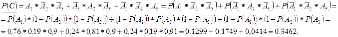
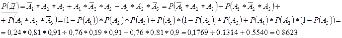

Тема: Класичне визначення імовірності. Теореми теорії ймовірностей.
Мета роботи: Навчитися використовувати класичне визначення ймовірностей та застосування теореми ймовірностей, розрізняти залежні-незалежні, сумісні-несумісні події, узагальнити поняття складної події а також дій з ними-додавання, множення.
Прилади і обладнання: ЕОМ.
Розрахункові формули:
імовірність події: Р(А)=
імовірність суми двох несумісних подій: Р(А+В)=Р(А)+Р(В)
імовірність добутку двох незалежних подій: Р(АВ)=Р(А)·Р(В)
імовірність суми двох сумісних подій: Р(А+В)=Р(А)+Р(В)- Р(АВ)
Хід роботи:
Задача: В комп’ютерному центрі працюють три групи програмістів. Імовірність виконання плану
1-ю групою; 2-ю – ; 3-ю – . Знайти імовірність:
1.Виконання плану всіма групами.
2.Виконання плану тільки однією групою.
3.Виконання плану двома групами.
4.Виконання плану хоча б однією групою.
= 0,76 = 0,81 = 0,91
– виконає перша група – не виконає перша група
– виконає друга група – не виконає друга група
– виконаю третя група – не виконаю третя група
В – всі три групи виконають план
С – виконання плану тільки однією групою
Д – виконання плану тільки двома групами
Е – виконання плану хоча б однією групою
Р(В) = 

Висновок: Вході виконання практичної роботи я навчився використовувати класичне визначення ймовірностей та застосування теореми ймовірностей, розрізняти залежні-незалежні, сумісні-несумісні події, узагальнити поняття складної події а також дій з ними-додавання, множення. При виконанні поставленої задачі я впевнився, що вона виконана вірно, оскільки ймовірність виконання плану 3-ма групами доволі велика, а однією – маленька.